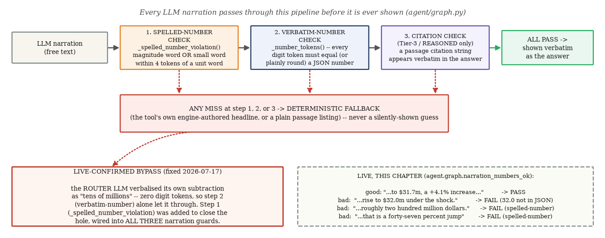
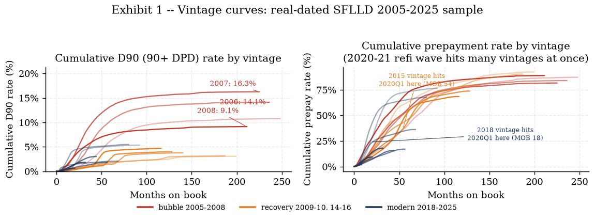
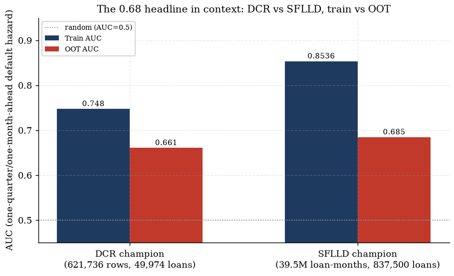
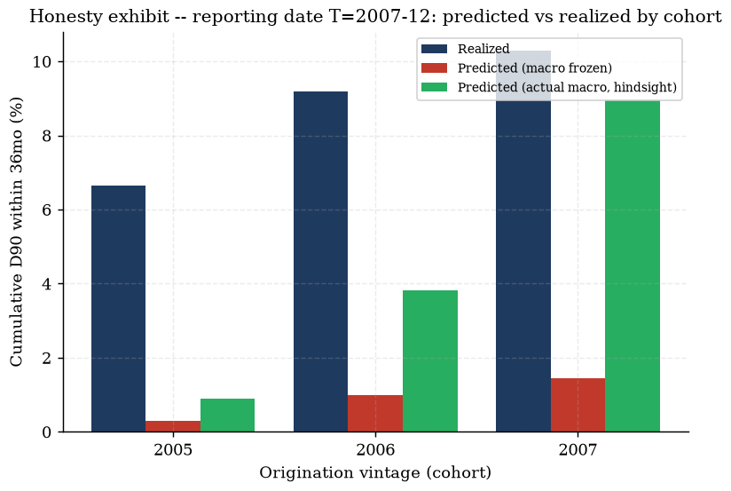

Every word of one CV entry, justified — claim, meaning, evidence, verify-it-yourself, and the interview question it invites
Compiled from outputs/**/*.md reports, tests/fixtures/*.py golden values, wiki/pages/agent-layer.md, docs/api_contract.md and the 13-chapter study-notes compendium (notes/chapters/) on 2026-07-20.
0 The subject, verbatim, and how to use this dossier
Below is the exact text of one CV entry — title, five bullets, three links — reproduced character-for-character
so nothing in this dossier can drift from what was actually claimed. Every subsequent section works through it
phrase by phrase.
How to use this dossier in an interview. Every highlighted (marked) phrase above gets its own
numbered entry below, always in the same five-part shape: Claim (what the phrase asserts, precisely)
→ What it means (the concept, defined for a non-specialist) → Evidence (the exact number
or fact, quoted verbatim from its source report or fixture — never retyped from memory) → Verify it
yourself (the file path, and a command where one applies, so a reader — or an interviewer — can reproduce the
claim independently) → The question it invites (an anticipated interview question plus a model
answer, so the entry is rehearsal-ready, not just reference material). Section 7 closes with a
consolidated 10-question bank and a full artifact/verify-it index for quick lookup during a live conversation.
Cross-links throughout point into the 13-chapter notes/chapters/ compendium for the full
step-by-step derivations this dossier deliberately does not repeat.
1 The title: “Agentic Credit-Risk Analytics Platform”
Two phrases carry the weight of the title. "Agentic" is a specific technical claim about how the LLM layer is
built (not just "has a chatbot"); "Credit-Risk Analytics Platform" is a claim about breadth — a multi-surface app,
not a single script or notebook.
1.1 — "Agentic"
Claim The system is not "an LLM wrapper that answers questions" —
it is a tool-calling agent: an LLM classifies and routes, but every number a user sees is produced by validated,
deterministic tool calls, with a refusal path for out-of-scope input and a replayable audit trail of every call.
What this means "Agentic" is doing real work in this sentence,
distinguishing three properties that a plain Q&A chatbot lacks: (i) tool-calling with validated
arguments — the LLM's job is to pick a function and fill a schema, not to produce the answer itself;
(ii) refusal — an explicit, tested path for questions outside the system's competence, rather than a
confident-sounding guess; (iii) audit trail — every run is logged in a form a human can replay later.
A LangGraph StateGraph implements this as a five-way router (COMPUTABLE→one of six
Tier-1/2/3 tools, REASONED, REFUSE) with a shared guard stack in front of every LLM-authored sentence before
it is shown.
Evidence"LangGraph StateGraph: router (Gemma 4 31B via
OpenRouter, temp 0, fallback DeepSeek V4 Flash) → one of 4 pydantic-validated Tier-1 tools → narrator
(numbers verbatim from tool result, post-check + deterministic template fallback) → END; validation failure
or out-of-scope → refusal node (names the supported families). Every run appends to
outputs/agent_log/*.jsonl — the replayable audit trail. The LLM never does arithmetic — review-
verified with a poisoned-narration test." (wiki/pages/agent-layer.md, "Architecture"). The
stretch build extends this to a three-way router split (COMPUTABLE / REASONED / REFUSE) across six tools in
three tiers — see §2.4 and §4.3 below for the full guard-stack and router mechanics.
Verify it yourself: wiki/pages/agent-layer.md ("Architecture", "REASONED
route"); agent/graph.py (router + guard functions, read-only citation); full walkthrough
Chapter 8.
The question it invites: "Isn't 'agentic' just marketing for 'has a chatbot'? What's actually
different here?"
A plain chatbot lets the LLM both decide the answer AND state it — if it hallucinates a number,
nothing catches it before the user sees it. Here the LLM's role is strictly narrower: it classifies the question
and, for computable routes, fills a validated argument schema; the actual number always comes from either the
frozen deterministic engine (Tier-1), executed sandboxed code (Tier-2), or a cited retrieval passage (Tier-3) —
never from the LLM's own recall. Then, before any LLM-authored sentence is shown, a guard stack re-checks that
every digit and every spelled-out number in that sentence traces back to one of those legal sources; any miss
discards the LLM's prose entirely for a deterministic, engine-authored fallback. That is the concrete difference
between "agentic" and "a chatbot with nice branding" — the LLM is disempowered from ever being the system's number
authority, by construction, not by prompt instruction alone.
1.2 — "Credit-Risk Analytics Platform"
Claim The deliverable is a multi-surface application — six
distinct tabs, each with its own panels and endpoints — not a single script, notebook, or one-shot report.
What this means "Platform" implies a reusable, navigable product
surface a client can explore on their own terms (executive summary, model internals, live scenario runs, policy
levers, a second real-data pipeline, and a conversational agent), backed by a documented, versioned API contract
— not a fixed PDF or a single dashboard view.
Evidence The six tabs, one line each (app/ui/src/tabs/*.jsx,
walked panel-by-panel in Chapter 9):
Tab
File
What it is
1. Executive Overview
ExecutiveTab.jsx
"the consultant's headline read of the book as reported" — KPI tiles, stage mix, scenario table, one GET /api/ecl/summary call.
2. The Model
ModelTab.jsx
"Coefficients, fit statistics, and the variable dictionary — with the honest caveats" — hazard-ratio tables, macro glossary, FRED badges.
3. Scenario Lab
ScenarioLabTab.jsx
"Parameterise the four Tier-1 engine tools — every number is computed by the frozen engine; the agent only routes, validates and narrates."
4. Policy
PolicyTab.jsx
"Every exhibit below is paired with the governance decision it informs — the dials a credit-risk committee actually turns."
5. Real Data (Freddie SFLLD)
FreddieTab.jsx
The largest tab by panel count — the independent 837,500-loan real-data pipeline, read-only, for comparison against the reported engine.
6. Copilot
CopilotTab.jsx
"the one tab where the agent IS the interface" — full chat, live SSE trace feed, session audit log.
Verify it yourself: live app huggingface.co/spaces/Preetomsorkar/ifrs9-ecl-copilot;
tab-by-tab walkthrough Chapter 9 (§9.3–9.8); wire contract
docs/api_contract.md, exercised field-by-field by tests/test_contract.py.
The question it invites: "Why six tabs and not one unified view — doesn't that fragment the
story?"
Each tab answers a different stakeholder question with the same underlying frozen engine: an
executive wants the headline number and trend (Tab 1); a model validator wants coefficients and fit statistics
(Tab 2); a risk analyst wants to run "what if UER rises 2pp" live (Tab 3); a governance committee wants to see
which numbers move when a policy dial — the SICR threshold, the scenario weights — is turned (Tab 4); anyone
skeptical of a synthetic panel wants to see the same methodology proven out on real, dated Freddie Mac loans
(Tab 5); and a first-time visitor wants to just ask a question in plain English (Tab 6). The unifying discipline
that keeps six tabs from fragmenting the story is the single contract-tested API underneath all of them — the
"north star" is a consultant's deliverable plus a client's lab, not six independent tools bolted together.
2 Bullet 1 — "Estimated forward-looking IFRS9 expected credit losses with auditable models & trustworthy AI support"
Four phrases, four independent claims: the accounting philosophy (forward-looking), the specific quantity
being estimated (expected credit losses), the governance property of the models (auditable), and the governance
property of the AI layer on top (trustworthy AI support).
2.1 — "forward-looking"
Claim The model provisions for credit losses before a
default has happened, using probability-weighted forward information — the specific accounting reform IFRS 9
made over its predecessor standard.
What this means IAS 39's incurred-loss model could only
recognise a loss after a triggering event had already occurred — "too little, too late", and structurally
procyclical, since provisions arrive in a cliff exactly when a bank can least afford it. IFRS 9's
expected credit loss model instead provisions from initial recognition, before any default, using
probability-weighted, forward-looking information.
Evidence
IAS 39 (incurred loss)
IFRS 9 (expected loss)
Trigger to recognise a loss
A loss EVENT must already have occurred
None — provision from initial recognition
Information used
Backward-looking (has something bad happened?)
Forward-looking, probability-weighted (what do we expect over the horizon?)
Provisioning path over the cycle
A cliff at the trigger point — procyclical
Staged (12-month → lifetime) — smoother, earlier
Effective date
superseded
Annual periods beginning on or after 1 Jan 2018
Source: "IAS 39's incurred-loss model recognised a credit loss only after a loss event had
already occurred — judged 'too little, too late' in the post-2008 review, and structurally procyclical... IFRS 9
replaces that with a forward-looking expected credit loss (ECL) model that provisions from initial recognition"
(Chapter 1 §1.1, "Why ECL replaced incurred loss").
Verify it yourself: Chapter 1
§1.1 (definitional chapter, no fixture — a standards-text claim, not a computed one).
The question it invites: "Concretely, what does 'forward-looking' change about when a bank books
a loss?"
Under incurred loss, a performing loan carries essentially zero provision right up until the moment
it defaults or a specific trigger fires; under expected loss, every performing loan carries a non-zero 12-month
ECL from day one, and that provision grows well before default as the loan's risk deteriorates (the staging
mechanism, Stage 1→2→3) — the project's own DCR staging exhibit shows Stage 2 share moving from 0%
in a calm quarter to 75.8% in a stress quarter, purely from the SICR test re-evaluating existing loans, with no
new defaults required to move the number (outputs/staging/staging_report.md).
2.2 — "expected credit losses"
Claim ECL is a specific, formula-defined quantity — the
probability-weighted, discounted sum of expected shortfalls — not a colloquial phrase for "provisions" in
general.
What this means ECL sums, over every future period $t$ up to
horizon $T$, the probability of defaulting IN that period (the marginal PD, not cumulative) times the
loss given that default times the exposure at that default, all discounted back to today at the loan's effective
interest rate:
where $\lambda_t=P(T_{\text{default}}=t\mid T_{\text{default}}\ge t)$ is the hazard (conditional default
probability in period $t$ given survival to its start), $S(t-1)=\prod_{k=1}^{t-1}(1-\lambda_k)$ is the
survival probability through period $t-1$, $LGD_t$ is loss given default, $EAD_t$ is exposure at default,
and $EIR$ is the loan's effective interest rate. $T=1$ gives 12-month ECL (Stage 1); $T=$ remaining
contractual maturity gives lifetime ECL (Stage 2/3).
Evidence The golden-fixture worked example (5-year amortising
loan, principal €1,000,000, EIR 6%, constant LGD 35%, seasoning-hump hazards 1.5%/2.0%/2.2%/2.0%/1.8%):
12-month ECL = €4,952.83; lifetime ECL = €16,571.39 (a 3.35× jump), derived — not
hand-typed — by tests/fixtures/compute_ecl.py from exactly those stated inputs and checked to the
source notes' own printed precision by tests/test_fixtures.py.
Verify it yourself: uv run --no-sync python -c "from tests.fixtures import
compute_ecl as m; print(m.RESULTS['ecl_12m_eur'], m.RESULTS['ecl_lifetime_eur'])" reproduces
4952.83.../16571.39... from the stated inputs; full derivation
Chapter 2 §2.3.
The question it invites: "Why does lifetime ECL jump 3.35× over 12-month ECL rather than
scaling roughly with the 5× longer horizon?"
Two effects work in opposite directions across the horizon. Discounting shrinks later years'
contribution ($(1.06)^{-t}$ falls each year), which would push the ratio below 5×. But the loan is
amortising ($EAD_t$ falls each year as principal repays), which — combined with the specific seasoning-hump
hazard shape ($\lambda_t$ peaking at $t=3$, not $t=1$) — means the marginal PD in later years is not simply
"more of the same" default risk added on top; it is default risk on a shrinking, already-partly-repaid balance
at a still-nontrivial hazard. The 3.35× ratio, not 5×, is exactly what the combination of discounting,
amortisation, and the seasoning hump implies — not evidence of a modelling error.
2.3 — "auditable"
Claim Every model number in the deliverable traces to a frozen,
version-controlled engine with an enforced change-control gate, a documented decision history, and a formal MDD
— not a black box whose outputs must simply be trusted.
What this means "Auditable" here is a governance property with
four concrete mechanisms, not an adjective: (i) a frozen-engine gate — the production engine only changes
behind a full-suite re-run and a fingerprint check; (ii) 133 golden fixtures that pin every worked
example's numeric output; (iii) a fingerprint tripwire that classifies any change to a frozen file as
NONE/COSMETIC/STRUCTURAL; (iv) a compiled Model Development Document (MDD) whose own opening line states
"every number in this document is quoted verbatim from a cited source file — nothing here is recomputed".
engine/{hazard,lgd,ead,staging,ecl}.py frozen 2026-07-05 once the 187/187 gate passed; any structural change requires a full suite re-run + decision-register entry
Phase-B gate: all five frozen files NONE (fingerprint scan + git-blob sha256 belt-and-braces)
Golden fixtures
133 worked-example values, gated by tests/test_fixtures.py
133/133 passing
Panel pin
data/processed/panel.parquet sha-pinned at every gate
byte-identical, every gate
Isolation contract
Freddie rung-3 refit never touches the frozen engine — 5 binding rules (schema contract, stateless engine, dataset-scoped calibration, namespaced outputs, one lockfile)
enforced, documented wiki/memory/decisions.md
MDD
Generated from the wiki, never re-derived — "every number... quoted verbatim... nothing here is recomputed"
outputs/mdd/MDD.md, 7 sections + appendix
Verify it yourself: uv run --no-sync pytest tests/ -q (full suite);
outputs/freddie/gate_phaseB.md (fingerprint + sha256 detail); MDD governance sections
outputs/mdd/MDD.md §6; full walkthrough Chapter
13.
The question it invites: "What actually stops someone from silently changing a coefficient in the
frozen engine?"
Three independent layers, not one. First, process: any structural change to a frozen file requires
re-running the full test suite (659/659 at the latest gate) and adding a decision-register entry — there is no
"just edit and ship" path. Second, a mechanical fingerprint scan classifies every frozen file as NONE / COSMETIC
/ STRUCTURAL on every gate — a silent structural edit would flip that classification and fail the gate. Third, a
belt-and-braces git-blob sha256 comparison against HEAD is run alongside the fingerprint scan specifically because
a fingerprint scheme is itself code that could have a blind spot — the sha comparison is a second, independently-
implemented check on the same claim. All three passed NONE/byte-identical at the most recent gate.
2.4 — "trustworthy AI support"
Claim The AI layer is not merely fluent — every LLM-authored
sentence passes through a mechanical guard stack before being shown, and the guard stack's own gap was found and
fixed by adversarial review, not assumed sufficient by design.
What this means Fluency is not evidence of correctness — an
invented number and a correct number can read identically well. The guard stack checks the one thing prose style
cannot signal: whether every number in an LLM's answer actually traces to a legal source (the tool's own JSON
result, a cited passage, or the user's own question text).

Exhibit D.1 (reused from Chapter 8, Exhibit
8.4) — the guard pipeline's actual runtime order: spelled-number check → verbatim-number check
→ citation check (Tier-3/REASONED only) → deterministic fallback on any miss (agent/graph.py).
Evidence — the live-recorded bypass story"adversarial review
CONFIRMED a live spelled-out-number bypass ('tens of millions' — the router LLM did its own subtraction and
verbalised it to dodge the digit regex) and fixed it with _spelled_number_violation() wired into
ALL THREE guards (reasoned/narration/docs), with regression tests." (wiki/pages/agent-layer.md,
"REASONED route"). The digit-token regex (Layer 1, built Day 4) is by construction blind to a number spelled out
in words — "two hundred million dollars" contains zero digit characters — so a router LLM that verbalised its own
arithmetic in prose slipped through Layer 1 alone. Layer 2 (_spelled_number_violation) closes the
hole with two independently-sufficient triggers: any magnitude noun (hundred/thousand/million/…), or a
small cardinal word within 4 tokens of a unit word (percent/bps/dollars/…).
Verify it yourself: agent/graph.py lines 658–719
(_number_tokens, _spelled_number_violation, narration_numbers_ok);
interactive reimplementation of the exact same regex/word-list logic, live against a real recorded tool result,
in Chapter 8 §8.6's guard-pipeline stepper widget.
The question it invites: "If the guard stack has already needed one hotfix, how do you know it
doesn't have others?"
The honest answer is that no static guard can be proven complete against every future LLM phrasing
— the project does not claim otherwise. What it does claim, and can show, is the discipline that FOUND this gap:
adversarial (not just author-side) review specifically probing for guard bypasses, a recorded incident with the
exact reproducing input, a fix wired into all three guard call sites (not just the one that was probed), and a
regression test locking the fix in. The deterministic-fallback layer (Layer 4) is the actual safety net underneath
all of this: even a guard bypass that slips an invented number past every check would only ever affect prose
narration — Tier-1's own headline string, which IS the trusted, engine-authored fallback text, is
always available and is what a failed check falls back to. The narration layer is a UX enhancement over that
trusted headline, not a replacement for it.
3 Bullet 2 — "Used a 621K-row DCR mortgage panel + 837K-loan Freddie Mac (39.5M rows) + FRED & DFAST macro data"
Four data sources, each with its own entry: the primary DCR panel the frozen engine is fit on, the independent
real-world Freddie Mac stretch, the FRED macro series that feed both, and the DFAST supervisory scenarios that
drive the forward-looking overlay.
3.1 — DCR: "621K-row ... mortgage panel"
Claim The production engine is fit on a 621,736-row loan-quarter
panel (49,974 loans), built from a raw 622,489-row file through a fully-audited, seven-step eligibility waterfall
— not an unexamined "clean the data and move on" pass.
Evidence — the waterfall
(outputs/panel/waterfall.md, generated by data/panel/build_panel.py):
#
Step
Rows out
Loans out
Reason (condensed)
—
Raw
622,489
50,000
15,158 default rows, 26,589 payoff rows
1
exact_duplicate_rows
622,184
50,000
verbatim copies of an existing row, no information lost
2
id_collision_loans
622,076
49,995
5 ids each contain two interleaved distinct loans, unattributable
3
same_quarter_status_conflict
622,069
49,995
terminal row kept, shadow status-0 row dropped
4
post_terminal_truncation
622,069
49,995
generic guard, expected 0 after steps 1–3 (recorded to prove the check ran)
5
nonpositive_origination_balance_loans
621,799
49,977
18 loans, balance_orig missing-coded 0
6
zero_balance_live_rows
621,761
49,976
non-terminal rows with balance≤0 (terminal payoff-zero rows KEPT)
The anonymized-clock honesty note + calendar-anchoring check DCR's
time index $t=1\ldots60$ is an anonymized quarter index, not real calendar dates — a documented
limitation, not hidden. Rather than leave that unverifiable, the project checked the anonymized clock against a
real external series: "the panel's own macro time index was separately verified to match FRED's national
unemployment series at correlation $0.9963$, anchoring the calendar axis on external, real-world data"
(Chapter 5 §5.7). This is also how $t{=}1$ is independently
dated to 2000Q2 for every calendar-facing exhibit in this dossier and the compendium.
Verify it yourself: outputs/panel/waterfall.md (full table + lag-construction
audit); full narrative Chapter 1 and
Chapter 11 §11.1 (DCR-vs-SFLLD comparison table).
The question it invites: "Why does the raw file lose loans at step 2 rather than just fixing the
collision?"
Step 2's five ids each contain two DIFFERENT loans sharing the same (id, time) key with genuinely
conflicting covariates — e.g. two different balance_orig/FICO tracks under one id, both eventually defaulting.
There is no principled way to attribute a given row to one loan or the other from the data alone, so the only
defensible move is to exclude the whole id rather than guess an attribution that could silently corrupt either
loan's history — a governance instinct that recurs throughout the project (declared exclusion over silent
imputation).
3.2 — "837K-loan Freddie Mac (39.5M rows)"
Claim An independent, real-dated, real-state stretch dataset —
837,500 loans and 39,522,565 loan-months across 17 sampled origination vintages (2005–2025, four vintages
never downloaded and documented as a gap, not a failure) — used to refit the hazard and LGD models and to run an
honest historical backtest, entirely isolated from the frozen production engine.
Full 17-row table with all vintages: outputs/freddie/ingest/dq_report.md ("Per-vintage row
counts and event rates"). Totals: 837,500 loans, 39,522,565 modeled loan-months.

Exhibit D.2 (reused from Chapter 11,
Exhibit 11.5) — vintage curves: the 2007 bubble-era cohort's cumulative D90 rate (16.3%) is nearly 5×
the modern 2018–2025 cohorts', and the 2020–21 refi wave shows up as a shared calendar-time acceleration
across every pre-2020 vintage's prepayment curve.
Verify it yourself: outputs/freddie/ingest/dq_report.md (full 17-vintage
table + sentinel/missing-value profile); coverage note on the 4 undownloaded vintages: freddie/ingest.pyMISSING_VINTAGES; full EDA Chapter 11.
The question it invites: "This is a second, real dataset — why keep it separate from the production
engine instead of just retraining on it?"
Because the value of the DCR engine's own validation (its golden fixtures, its frozen-gate history)
depends on it staying exactly reproducible — silently swapping in Freddie coefficients would break every one of
those guarantees for no methodological gain. Instead the project adopted a five-rule isolation contract: one
canonical schema per panel; the engine stays frozen and stateless (no cross-dataset coefficient inheritance is
even possible); every dataset-tuned calibration (SICR thresholds, cure definition, satellite lags, ρ) is
re-estimated per dataset, never inherited; outputs and wiki pages are dataset-namespaced; one lockfile across both
analyses. The Freddie refit exists to ask a genuinely different question — does the methodology hold up on real
loans with real dates and real realised losses? — not to replace the production model.
3.3 — "FRED ... macro data"
Claim Macro drivers are pulled from the Federal Reserve's FRED
API — national series for the DCR rung, and a genuine geographic-resolution UPGRADE to state-level series for the
Freddie rung (which, unlike DCR, carries a property-state field).
What this means / which series Per US state postal code present in
the SFLLD data (50 states + DC + PR + GU + VI): civilian unemployment rate, monthly, seasonally adjusted
(FRED '{POSTAL}UR') and the FHFA all-transactions house-price index, quarterly, NSA
(FRED '{POSTAL}STHPI'), plus the national anchors UNRATE / USSTHPI used both
as a fallback for territories with no state-level series and as the exhibit/validation baseline.
Evidence — the state-level upgrade rationale, and its honestly-reported
gaps"This is the geographic-resolution upgrade recorded as a documented DCR limitation: rungs 1-2 merge
only NATIONAL macros because the DCR panel carries no state field... Freddie's SFLLD orig table DOES carry
property_state, so rung 3 merges state-level unemployment and house-price series instead."
(freddie/macro.py module docstring). The coverage is not universal, and the gaps are surfaced, not
hidden: GU and VI have neither series and fall back entirely to the national anchor; PR has a state unemployment
series but no state house-price series (HPI falls back to national). Every row carries boolean flags
(uer_is_national_fallback / hpi_is_national_fallback) so the approximation is visible
downstream rather than silently blended into a "state" number.
Verify it yourself: freddie/macro.py module docstring (full coverage note,
empirically verified against the live FRED API); merge pipeline diagram
Chapter 11 §11.3.
The question it invites: "Why not just use national UER/HPI everywhere — does state-level macro
actually matter for this book?"
Yes, materially — the project's own state-heterogeneity exhibit (Chapter 11 §11.10) regresses
2006–07 vintage cumulative D90 rate against each state's peak-to-trough HPI drawdown 2006–2012 and
finds r=0.89 across 49 states, with NV/FL/AZ/CA (the sharpest housing-bust states) as clear outliers at the top —
a national-only macro series would average that dispersion away entirely, understating exactly the loans that
drove the worst realised losses.
3.4 — "DFAST macro data"
Claim The forward-looking scenario overlay is driven by the
Federal Reserve's own DFAST/CCAR supervisory scenarios — Baseline and Severely Adverse macro paths, the same
scenarios US banks use for their own stress-testing submissions — not an internally-invented stress shape.
What DFAST is The Dodd-Frank Act Stress Test (DFAST) publishes,
annually, quarterly paths for a battery of macro variables (real GDP growth, unemployment rate, house-price index
level, Treasury yields, equity indices, …) under three scenarios — Baseline, Adverse, Severely Adverse —
plus a Historic/Actual series for calibration. This project ingests the CSVs directly:
data/scenarios/2026_Final_{Historic,Supervisory_Baseline,Supervisory_Severely_Adverse}_Domestic.csv,
each row one quarter (e.g. 2026 Q1–Q4) × 17 macro columns.
Evidence — the DFAST-shaped scenario fan The Severely Adverse
path is far more than a level shift: unemployment rises from 4.6% (Baseline 2026 Q1) to a peak of 9.0% by
Severely Adverse 2026 Q4, while real GDP growth flips from +1.9%/+2.0% to −5.4%/−4.9%/−3.8%/
−2.7% across the same four quarters (data/scenarios/2026_Final_Supervisory_Severely_Adverse_Domestic.csv).
These DFAST deltas, rebased to the project's own reporting date and satellite-mapped into the systematic factor
$Z$, are what produce the scenario fan below.
Exhibit D.3 (reused from
Chapter 6, Exhibit 6.2) — the DFAST-shaped scenario fan: the systematic factor $Z$ recovered from
history (grey), then the three satellite-mapped scenario paths (upside/base/severe) fanning out from the
2015Q1 reporting date and reverting to a shared long-run tail.
Verify it yourself: raw CSVs data/scenarios/*.csv; ingestion
data/ingest/dfast.py; scenario-to-Z pipeline
Chapter 6.
The question it invites: "Are these YOUR stress assumptions, or a regulator's?"
A regulator's — DFAST scenarios are published by the Federal Reserve and used industry-wide for
CCAR/DFAST submissions, so using them here means the stress shape is externally validated and directly comparable
to what a real bank's own stress-testing team would use, rather than an internally-tuned "severe" that could be
accused of being calibrated to produce a convenient number. What IS this project's own judgement is the
probability weighting applied to the three scenarios (50% base / 25% down / 25% up, with a documented sensitivity
table showing the reported allowance moves only ±2% across reasonable alternative weightings) — that
weighting step, not the underlying macro paths, is the piece flagged honestly as not statistically identified.
Five techniques, each with its own what/why-this-choice/evidence entry, one key equation, and one plot.
4.1 — cloglog hazards
What A discrete-time (quarterly/monthly) hazard model —
$P(\text{default in period } t \mid \text{survived to } t)$ — fit with a complementary log-log (cloglog) link
rather than the more familiar logit.
Why this choice Cloglog is not an arbitrary alternative to logit
— it is the exact algebraic consequence of a continuous-time proportional-hazards process observed at
discrete intervals, derived step-by-step from $h(t\mid x)=h_0(t)\exp(x'\beta)$ down to:
where $\alpha_t=\ln\!\big(\int_t^{t+1}h_0(u)\,du\big)$ is a free, interval-specific intercept (the flexible
baseline a spline in loan age is fitted to recover) and $\exp(\beta)$ is a genuine continuous-time hazard ratio —
interval-length-consistent by construction, which a logit-fitted $\exp(\beta)$ is not.
Evidence — the seasoning hump Both panels independently locate
a peak default hazard 3–4 years on book, not at origination: DCR's fitted spline peaks at
12 quarters (empirical peak 10 quarters, within the module's own ±8q tolerance,
outputs/hazard/fit_stats.md); the independently-refit SFLLD champion's empirical hazard-by-age
profile peaks in the 42–48-month bin (0.256% monthly) — the same 10–12-quarter-equivalent
region, corroborating the DCR shape on a completely different, real-dated dataset.
Exhibit D.4 (reused from Chapter 3,
Exhibit 3.4) — the seasoning hump: fitted cloglog age-baseline spline (peak 12 quarters) against the
empirical hazard-by-age scatter (peak 10 quarters).
Verify it yourself: full derivation (6 algebraic steps, nothing skipped)
Chapter 3 §3.1; worked cloglog-vs-logit numeric
comparison table in the same section.
The question it invites: "At the hazard rates in this book, does the cloglog-vs-logit choice
actually matter, or is it a purely theoretical nicety?"
It matters at the tails, not in the middle of the range this book actually operates in. The
project's own worked check shows cloglog and logit coefficients are near-indistinguishable for a RARE event
(e.g. at a 2.7% quarterly hazard the gap between the two link functions' transformed values is only 0.014) —
so much so that the production IRLS solver warm-starts the cloglog fit from the logit solution. The gap widens
sharply as the hazard grows, which is exactly why the choice is stated as a principled derivation rather than
"we tried both and one fit slightly better" — the interval-length-consistent hazard-ratio interpretation is the
real payoff, and it holds regardless of where in the hazard range a given loan-quarter sits.
4.2 — two-stage LGD
What LGD is modelled as two sequential regressions — a cure logit
(will this default resolve loss-free?) and a severity fractional-logit (given it does not cure, how large is the
loss?) — rather than one regression predicting LGD directly.
Why this choice Workout LGD is empirically bimodal: a spike of
near-zero-loss cures and a separate, right-skewed hump of write-off losses. One regression through both modes
predicts a middling value (say 35%) that essentially no individual loan realises. The two-stage split is not an
approximation — it is the EXACT expectation of a two-conditional-regime random variable, by the law of total
expectation:
(with $LGD_{\text{cure}}=0$ by convention — realised mean LGD among train cures is 0.0036, close enough that a
third regression on an already-tiny residual is not fit). Severity, in turn, is topped up by an excess-loss
loading $=\mathbb{E}[\max(LGD-1,0)\mid\text{non-cure}]$ for the workouts whose costs push realised loss beyond
100% of EAD — never silently clipped at 1.
Evidence — the loading, DCR vs the real-loss SFLLD refit DCR
constant excess-loss loading: 0.0255 (14.2% of train non-cure LGDs exceed 1; OOT validation: realised
excess mass 0.0236 vs loading 0.0255). SFLLD's independently-RECONSTRUCTED realised-loss refit (built from
Freddie's own cash components, not an opaque vendor field) finds a lower overall constant, 0.0148 — but,
because SFLLD's liquidation-year span covers the full 2006–2025 GFC-through-modern cycle (which DCR's
shorter panel cannot test), a PER-liquidation-year-bucket loading reveals the constant hides real cycle
dependence, ranging from 0.0020 (pre-2008) to 0.0417 (2020+) — a 0.0397 spread across cycle phases.
Exhibit D.5 (reused from Chapter 4, part of
§4.4 / Chapter 12) — the excess-loss
loading is cycle-dependent, not constant: SFLLD's per-bucket loading (bars) spans 0.0020 to 0.0417 against the
two pooled constants, DCR 0.0255 and SFLLD-overall 0.0148 (dashed lines).
Verify it yourself: uv run --no-sync python -c "from tests.fixtures import
compute_ecl as m; print(m.RESULTS['workout_lgd_pct'])" (the §10 workout-LGD golden fixture); full
two-stage derivation Chapter 4 §4.1; DCR-vs-SFLLD loading
comparison outputs/freddie/lgd/lgd_report.md §6, §8.
The question it invites: "Isn't a 0.0148-vs-0.0255 loading difference just noise between two
datasets?"
No — the per-bucket breakdown shows it is a genuine cycle effect, and the two pooled constants
are each averaging over a different mix of cycle phases (DCR's shorter panel simply cannot see the full
2006–2025 span SFLLD covers). The per-bucket table is reported ALONGSIDE the pooled constant specifically
because a single constant would materially misstate stress-period severity — the documented recommendation is
that a downstream ECL assembly under active stress-period liquidation volume should prefer the bucket-specific
loading over the pooled one, exactly the kind of governance nuance a single "the loading is X%" headline would
hide.
4.3 — Vasicek cycles
What A one-factor Gaussian-copula (Vasicek) model that
conditions a through-the-cycle (TTC) PD on a single systematic credit-cycle factor $Z$, turning a static PD into
a point-in-time (PIT) PD that rises in downturns and falls in booms.
Why this choice IFRS 9 requires forward-looking, scenario-
conditional PDs, but the frozen hazard model is fit once, TTC. Vasicek's one-factor structure — asset return
$A_i=\sqrt{\rho}Z+\sqrt{1-\rho}\,\varepsilon_i$, default when $A_i<c$ — gives a closed-form conditional default
probability, derived from first principles down to:
where $\Phi$ is the standard normal CDF, $\rho$ is the asset correlation (systematic-risk weight), and $Z$ is
the (standardised) systematic factor — $Z<0$ marks a downturn quarter and pushes $PD_{PIT}$ above $PD_{TTC}$.
Evidence — the ρ=0.0227 calibration story $\rho$ is not
assumed — it is calibrated (Belkin/Suchower/Wu) by inverting the observed default rate each quarter into an
implied $Z_t$ and solving for the $\rho$ that makes $\mathrm{Var}(Z_t)=1$ (the identifying moment condition, since
$Z$ is defined as standard normal). This project's calibrated $\rho=\mathbf{0.0227}$ — noticeably below the source
notes' illustrative $\rho=0.12$ and Basel's mortgage $\rho=0.15$ — recovers a credit-cycle path whose trough
($Z=-2.74$, 2008Q1) lands inside the independently-NBER-dated GFC window (2007Q4–2009Q2) without that window
ever being an input to the calibration, and whose PIT PD peak (3.44%, also 2008Q1) co-locates with it.
Exhibit D.6 (reused from Chapter 5, Exhibit
5.3) — the credit cycle through the Vasicek lens: top, PIT PD implied by the recovered $Z_t$ against
the flat TTC anchor, GFC window shaded; bottom, the recovered $Z_t$ path itself, troughing at $-2.74$ in 2008Q1.
Verify it yourself: uv run --no-sync python -c "from tests.fixtures import
compute_vasicek as m; print(m.RESULTS['pd_pit_pct_z_minus_2_0'])" reproduces the 7.34%-at-Z=-2 golden
fixture; full derivation + Belkin calibration Chapter 5 §5.3,
§5.7.
The question it invites: "0.0227 is a small correlation — doesn't that make the whole cycle
adjustment negligible?"
The opposite, mechanically: $\rho$ appears in the DENOMINATOR of $\sqrt{\rho}$ inside the formula's
numerator, so a SMALL $\rho$ AMPLIFIES how far $PD_{PIT}$ moves from $PD_{TTC}$ for a given standardised gap in
observed default rates — dividing by $\sqrt{0.0227}\approx0.151$ turns even a modest deviation from the TTC
anchor into a large $|Z|$. This is exactly the mechanism the Belkin calibration exploits in reverse to solve for
$\rho$ from the required variance of the whole path. A reader who reads "$\rho=0.0227$" as "2.27% of defaults are
correlated" is conflating asset correlation with default correlation — a documented gotcha in the compendium
precisely because the intuition runs backwards from what the algebra does.
4.4 — LSTM challengers
What A sequence model (1-layer LSTM + 2-layer MLP head) that
sees a loan's trailing 24-month delinquency-path history — a feature family the champion hazard does not use at
all — scored on the identical champion train/OOT split, as a challenger-never-champion scorecard exercise.
Why this choice The specific question is whether path-DEPENDENCE
memory adds discrimination beyond the champion's current-state-only view. A raw headline AUC comparison cannot
answer that on its own — the champion literally cannot see the LSTM's whole feature family, so ANY LSTM lift on
the population as a whole is uninformative about whether the lift is really about path memory. The project's own
honest lift-split decomposes the OOT population by whether the loan's window contains ANY prior delinquency:
Group
n
Events
Champion OOT AUC
LSTM OOT AUC
Δ
Clean history
19,643,934
40
0.5386
0.5287
−0.0098
Prior delinquency spell
977,978
16,792
0.5698
0.9570
+0.3872
(headline, both groups pooled)
20,621,912
16,832
0.6847
0.9925
+0.3078
Evidence — the honest decomposition, and the caveat that comes with
it The lift is almost entirely concentrated where the hypothesis predicts it should be — near-random on
clean history ($0.529$ vs champion $0.539$, i.e. the LSTM adds essentially nothing there) and a genuine
$+0.387$ AUC lift specifically on loans with a prior delinquency spell. "If the LSTM's edge over the
champion is materially LARGER on the prior-delinquency-spell group than on the clean-history group, that is the
direct evidence for the path-dependence hypothesis" (outputs/freddie/lstm/lstm_report.md) —
which is exactly what is observed. The same report flags a live confound: the LSTM's whole feature set is
delinquency-path history, so it is directly exposed to the COVID forbearance-era ladder distortion the champion
(which never sees dlq_num at all) is insulated from — any lift concentrated in 2020–2021 rows
should be read cautiously.
Challenger-never-champion governance Both this project's
challengers stay challengers by explicit policy, regardless of raw AUC: the DCR-side MLP challenger wins
in-sample (0.7632 vs champion 0.7476) but LOSES OOT (0.6417 vs champion 0.6609) and is retained as a challenger;
the SFLLD LSTM wins OOT AUC overall (0.9925 vs 0.6847) but the honest lift decomposition above shows the
advantage is concentrated delinquency-state memory, not proven general path-dependence — both stay
challenger-never-champion (outputs/mdd/MDD.md §4.3).
Verify it yourself: outputs/freddie/lstm/lstm_report.md (full report,
including the 7 declared simplifications); calibration/lift figures
outputs/freddie/lstm/{calibration_comparison,lift_split}.png; narrative
Chapter 12.
The question it invites: "A 0.9925 AUC sounds almost too good — why not promote the LSTM to
champion?"
Because a near-perfect pooled AUC is itself evidence of what's really happening: the LSTM's
input includes the loan's own recent delinquency status, which is mechanically close to leaking the label it is
trying to predict (a loan already at 60+ DPD is trivially likely to reach 90+ DPD soon). The lift-split table is
what separates a genuinely useful signal (path memory on already-delinquent loans, +0.387 AUC) from a headline
number that is mostly measuring something close to current-state proximity to the event. Promoting on the
pooled number alone, without that decomposition, would risk shipping a model whose apparent edge doesn't
transfer to the clean-history population that makes up the overwhelming majority of a performing book (19.6M
of 20.6M OOT rows) — exactly the scenario the challenger-never-champion policy exists to prevent.
4.5 — a LangGraph LLM copilot
What A LangGraph state machine implementing a three-tier
retrieval/compute architecture (Tier-1 validated compute tools, Tier-2 sandboxed code execution, Tier-3 cited
documentation retrieval) plus a REASONED interpretation route and a refusal route, all fronting the frozen
engine — deployed publicly.
Why this choice A single router LLM classifies every question
into exactly one of three CLASSES (COMPUTABLE→one of six Tier-1/2/3 tools, REASONED, or REFUSE) and, for
COMPUTABLE, also emits that tool's arguments; decide_route then pydantic-validates whatever the
router claimed — an unparseable response, an unknown route, or an argument-validation failure ALL collapse
straight to REFUSE. This graph shape keeps the LLM's role strictly bounded to classification/argument-extraction,
never letting it become the source of a shown number.
Exhibit D.7 (reused from Chapter 8, Exhibit
8.1) — the three-tier architecture: one router classifies only, five outcomes fan out, all LLM-touched
outcomes pass through the shared guard stack before the shared audit trail.
Evidence — the router's own scope split Tier-1
(shock_macro/reweight_scenarios/rerun_ecl/decompose_waterfall)
numbers come from the frozen engine; Tier-2 (analyze_data) has the LLM WRITE pandas code that is
then AST-validated and EXECUTED in a hardened sandbox — the trust boundary sits at execution, not at the LLM's
claim; Tier-3 (query_model_docs) retrieves and quotes real wiki/PageIndex passages with NO LLM
involved in the retrieval step at all. A worked flagship example: UER +2pp shock moves the reported allowance
$30.5m → $31.7m (+4.1%), reproduced live via the coherent-shock convention (§6.3 below).
Verify it yourself: agent/graph.py (build_graph(),
ROUTER_SYSTEM_PROMPT); live disambiguation-fix example ("walk me through the waterfall" vs "explain
the waterfall" routing to two different tiers on purpose) Chapter 8
§8.4; full router mechanics §8.5.
The question it invites: "Why LangGraph specifically, rather than a simpler prompt-chaining
approach?"
The graph shape is what makes the "LLM never does arithmetic" guarantee structurally enforceable
rather than merely a prompting convention: every LLM-touched path (Tier-1's narrator, Tier-2's code-writer,
Tier-3's docs-narrator, REASONED) is a distinct node that funnels through the SAME shared guard stack before
reaching END, and an unparseable or invalid router response has exactly one legal destination — REFUSE — with
no fallback path that lets a malformed classification quietly default to guessing an argument. A simpler
prompt-chain could implement similar logic ad hoc, but the state-machine structure is what makes "every
LLM-touched answer passes through the guard stack, no exceptions" a property of the graph's topology, checkable
by inspection, rather than a claim that has to be re-verified prompt-by-prompt.
Three headline numbers: a discrimination statistic, a correctness-verification count, and a deliberately
humbling honesty exhibit. Each is a genuinely different kind of evidence — the first is a "how good is the
model" number, the second is a "does the code compute what the theory says" number, the third is a "how wrong
would this have been in the worst real crisis on record" number.
5.1 — "0.68 OOT AUC (champion)"
What AUC and OOT meanAUC (area under the ROC curve) is
the probability that the model ranks a randomly chosen defaulting loan-quarter's predicted hazard above a
randomly chosen non-defaulting one's — 0.5 is random, 1.0 is perfect separation. OOT ("out-of-time") means
the model is scored on a time window it was never fit on — here, train is $t\le40$ and OOT is $t=41$–$60$
for DCR (the stress + aftermath window), scored strictly read-only, no refit — the honest test of whether
discrimination survives into genuinely unseen data, as opposed to in-sample fit quality.
Evidence — DCR vs SFLLD, train vs OOT DCR champion default
hazard: train 0.7476 / OOT 0.6609 (outputs/hazard/fit_stats.md) — displayed at the CV's own
rounding as "0.68 OOT AUC" is, more precisely, 0.661. The independently-refit SFLLD champion (39.5M loan-months,
real dates): train 0.8536 / OOT 0.6847 (outputs/freddie/hazard/metrics.json).

Exhibit D.8 (regenerated for this dossier, notes/assets/img/dossier/build_diagrams.py)
— the 0.68 headline in context: DCR vs SFLLD, train vs OOT AUC. Both models discriminate well above random
(0.5) on genuinely unseen, out-of-time data.
Why OOT < train is honest, not a defect A gap between train
and OOT AUC is expected and desired evidence against overfitting — a model that scored IDENTICALLY on train and
OOT would be more suspicious, not less, especially across a window (DCR's $t{=}41$–$60$, SFLLD's
post-2016-12 window including COVID) that contains genuine regime shift the training data never saw. The
specific SIZE of the gap (train$-$OOT $\approx0.09$ for DCR, $\approx0.17$ for SFLLD) is itself informative: it
is larger for SFLLD precisely because SFLLD's OOT window contains the COVID forbearance regime, a shift DCR's
shorter, earlier panel does not have to contend with.
Verify it yourself: outputs/hazard/fit_stats.md;
outputs/freddie/hazard/metrics.json; full discrimination narrative
Chapter 3 §3.6 and
Chapter 12.
The question it invites: "0.68 is well short of 0.9+ — is that actually a good AUC for this
problem?"
For a mortgage-default hazard scored strictly out-of-time across a genuine regime shift, yes —
0.66–0.68 is squarely in the range this literature reports for comparable models, and the project's own
stated discrimination floor is 0.65 (below which the SFLLD refit report would flag a fit as too weak to use).
The more interesting comparison is not "is 0.68 close to 1.0" but "does discrimination survive stress" — both
DCR and SFLLD clear their respective floors on data neither model was fit on, including data spanning a real
crisis, which is the actually relevant bar for an IFRS 9 model that must keep discriminating through the next
downturn, not just the calm period it was trained on.
5.2 — "matched 133 golden fixtures exactly"
What these are 133 numeric values, each independently DERIVED
from a worked example's stated inputs by a small tests/fixtures/compute_*.py module (never
hand-typed from the source text), then compared against that same worked example's own printed answer to the
precision it was printed at. tests/test_fixtures.py gates all 133 in one suite.
Evidence — a 5-row sample, values pasted from RESULTS
id
module
derived value
notes' printed target
ecl_12m_eur
compute_ecl
4952.83
€4,952.83
ecl_lifetime_eur
compute_ecl
16571.39
€16,571.39
cumulative_pd_5y_pct
compute_ecl
9.147
9.15%
pd_pit_pct_z_minus_2_0
compute_vasicek
7.342
7.34% @ Z=−2
pd_pit_pct_z_0_0
compute_vasicek
1.429
1.43% @ Z=0
pd_pit_pct_z_plus_2_0
compute_vasicek
0.171
0.17% @ Z=+2
The three Vasicek rows above are the "Vasicek trio" cited by the CV entry's own MDD headline row —
Z=−2 (downturn), Z=0 (anchor), Z=+2 (boom) — three points on the same $PD_{PIT}(Z)$ curve derived in
§4.3 above.
The freeze-gate story These 133 fixtures are not a one-time
sanity check — they are the literal gate that froze the production engine: "the engine is frozen only when
pytest tests/ is green; any engine change after the freeze re-runs the full suite"
(outputs/mdd/MDD.md §4.1). The gate history since then is zero-regression across six recorded
gates: 187/187 (engine freeze) → 381/381 (agent, HF Space public) → 509/509 (app v2 + Tier-2 sandbox)
→ 553/553 (SFLLD Phase A) → 582/582 (REASONED route) → 659/659 (SFLLD Phase B, current) — every
later gate is zero-regression on the one before it, and the 133 fixtures are re-verified, not merely re-run,
at each one.
Verify it yourself: uv run --no-sync pytest tests/test_fixtures.py -v
(133 passing IDs printed individually); browsable spreadsheet form
notes/assets/data/fixtures_all.xlsx; the eight source modules under
tests/fixtures/compute_*.py.
The question it invites: "'Matched exactly' — to what tolerance, and who decided that tolerance
was fair?"
Matched to the source notes' OWN displayed precision — the check computes how many decimal places
the notes printed a given target at (e.g. "9.15%" implies 2dp) and asserts the derived value is within one unit
of that last displayed digit, not an arbitrarily loose tolerance chosen after the fact. This is a meaningfully
strict bar: it means a fixture can fail if the underlying formula is even subtly wrong (e.g. a discounting
convention off by one period), which is precisely why a mismatch at the last displayed decimal is treated as "stop
and investigate a likely mistyped input or formula bug" rather than dismissed as rounding noise (documented
convention, notes/plan/conventions.md §5).
5.3 — "exposed a 9.4× GFC backtest miss"
The full honesty-exhibit narrative This is the project's own
central model-risk exhibit, and it is a DELIBERATELY humbling result the project chose to build, run, and report
rather than avoid. The method: refit the champion hazard spec, verbatim, AT each historical pseudo-reporting date
using ONLY the data and macro vintages that genuinely existed at that date (an "ALFRED-vintage" refit-in-time —
ALFRED being the Fed's own archive of historical data-as-it-was-then, not data-as-later-revised), then project
36 months forward and compare to what actually happened.
The as-of-2007 information set As of reporting date 2007-12-01,
the fit sample is 86,188 loan-quarters / 610 events, drawn from a world that had not yet seen the crisis unfold —
at 2007-12 the as-of-T fit frame deliberately EXCLUDES ~46% of the estimation window's events because their
macro was not yet published at that date, which is exactly what makes the resulting miss an honest one rather
than an artefact of hindsight leaking in.
Evidence — frozen 0.93% vs realized 8.75%
T (reporting date)
Active loans
Realized D90 (36mo)
Predicted (frozen macro)
Miss ratio (frozen)
Predicted (hindsight)
Miss ratio (hindsight)
2007-12-01
124,235
8.750%
0.928%
9.42×
4.613%
1.90×
2009-12-01
165,978
6.569%
5.554%
1.18×
4.658%
1.41×
2019-12-01
193,308
4.601%
0.920%
5.00×
71.519%
0.06×
Full 5-reporting-date table: outputs/freddie/backtest/backtest_report.md §2.
2007-12 check (the spec requirement, stated verbatim):"UNDERPREDICTS the GFC, as expected: a model
fit on pre-2008 data with macro frozen at 2007-12 levels cannot see the crisis coming; this is the exhibit's
central honesty result, not a defect."

Exhibit D.9 (reused from Chapter
12) — the honesty exhibit, per-vintage: realised vs macro-frozen predicted vs hindsight-macro predicted
cumulative D90, reporting date T=2007-12. The frozen-macro bar (red) underpredicts every cohort by a wide margin;
even the hindsight bar (green) still underpredicts the 2005/2006 cohorts.
Even a PERFECT overlay doesn't close the gap: the 1.90× hindsight
ceiling Scenario (b), "hindsight" — the champion re-scored with the ACTUAL realised macro path instead of
frozen values — is the ceiling a perfect forward-looking scenario overlay could have achieved. It still misses
by 1.90× at 2007-12. This is the model-risk floor NO scenario overlay closes: spec/parameter risk (plus,
here, the backtest's own frozen-LTV simplification), separate from the macro-extrapolation risk a scenario
overlay is specifically built to close.
The saturation twin: 2019-12 at 0.06× The OTHER direction
of the same underlying failure mode appears at 2019-12: fed the ACTUAL April-2020 unemployment print
(+10.6pp in one month, UER 14.7%) — about 20 standard deviations outside the model's training support — the
champion's linear-in-delta_uer_lag1 functional form saturates toward predicting 71.5% cumulative
D90 against a realised 4.6%, a 0.06× ("17× OVERprediction") miss. "This is not a computation
error — it is faithful linear extrapolation... the purest form of the parameter/spec model risk this backtest
exists to expose: even a PERFECT macro overlay cannot rescue a hazard whose functional form was never identified
in the regime the scenario visits."
The scenario-overlay conclusion Read together, 2007-12 and
2019-12 bound the model-risk story from both sides: a PIT hazard scored with frozen (naive) macro dangerously
UNDERSTATES a coming crisis (9.42×), while the same hazard fed an extreme ACTUAL macro shock can
dangerously OVERSTATE loss on a regime its functional form was never fit to (0.06× the other way). Neither
failure is fixed by "add a scenario overlay" alone — IFRS 9's forward-looking scenario requirement (which this
project separately implements, §3.4 above) closes the FIRST gap (naive extrapolation) but the SECOND
(extreme-regime functional-form breakdown) is exactly why the COVID-window handling in §4.4's LSTM entry
and the hazard report's own EXCLUDE-window recommendation exist — the honest finding here is that scenario
conditioning and regime-exclusion are complementary controls, not substitutes for each other.
The question it invites: "If the model missed the GFC by 9.4×, why should anyone trust
its ECL numbers at all?"
Because the 9.4× number describes exactly the failure mode IFRS 9's forward-looking design
exists to prevent, and this project builds and reports the exhibit specifically to make that failure mode
visible and quantified rather than assumed away. The frozen-macro scenario is a deliberately naive baseline — a
PIT hazard scored with macro simply held constant at today's value, which is precisely what paragraph 5.5.17
tells preparers NOT to do. The actual production design pairs the PIT hazard with the Vasicek/scenario overlay
(§3.4/§4.3 above) specifically so that ECL is never computed on a frozen-macro assumption in the first
place; this backtest exists to prove, with real historical data, why that architectural choice matters — not to
claim the resulting scenario-conditional ECL is itself immune to the 1.90× hindsight-ceiling model risk,
which the exhibit reports honestly as the residual floor.
6 Bullet 5 — "Shipped a live client app + MDD compiled via LLM-wiki & PageIndex RAG, grounding hallucination-free AI"
Five phrases about how the work was actually delivered and kept honest: the product itself, its formal
documentation, the two compilation mechanisms behind that documentation, and the end-to-end anti-hallucination
discipline tying the whole stack together.
6.1 — "live client app"
Claim A publicly-deployed, working application — not a
localhost demo or a slide deck — reachable at
huggingface.co/spaces/Preetomsorkar/ifrs9-ecl-copilot (Docker SDK, port 7860).
What a visitor can do in 60 seconds
Land on Tab 1 (Executive Overview) and see the reported allowance, coverage ratio, Jensen ratio, and
reporting date as four KPI tiles, plus the stage-mix bar and scenario table, all from one
GET /api/ecl/summary call — the headline read of the book, with zero clicks.
Switch to Tab 3 (Scenario Lab), drag a UER shock slider by +2pp, and watch the reported allowance
move from $30.5m to $31.7m (+4.1%) live, with a mini allowance-bridge waterfall — the frozen engine actually
re-running, not a canned demo value.
Switch to Tab 6 (Copilot) and ask, in plain English, "explain the ECL movement waterfall" or "what
happens to the allowance if unemployment rises 2 points" and watch the live SSE trace feed show the router's
classification and tool call in real time, then a grounded, cited answer.
Verify it yourself: visit the live Space URL directly; tab-by-tab guide
Chapter 9; deployment mechanics
Chapter 10.
The question it invites: "What happens if the Space cold-starts while I'm demoing it live?"
Documented, not hidden: an HF cold start may need to refit if the on-disk cache fingerprint
mismatches the running code (observed warm-up around 24.9 seconds); a warm start (cache hit) is around 9
seconds thanks to a joblib cache slimmed from 777MB to 88.7MB, with warm-vs-fresh outputs verified bit-identical
so a cold start never silently serves a different model than a warm one — it only costs time, never
correctness.
6.2 — "MDD"
Claim A formal Model Development Document exists, structured to
validator-standard sections, and is itself GENERATED from the compiled wiki rather than separately authored —
so it cannot drift from the project's own recorded knowledge.
Evidence — the validator-standard section list
(outputs/mdd/MDD.md table of contents, verbatim):
Executive Summary (what the model is, headline results, governance verdicts at a glance, the north star)
This is precisely the section shape a model-risk validator's own checklist expects — data
provenance, methodology with equations, independent validation evidence, an explicit limitations section, and a
governance/controls section — not a marketing one-pager.
Verify it yourself: outputs/mdd/MDD.md (full document); its own opening
line: "Every number in this document is quoted verbatim from a cited source file — nothing here is
recomputed."
The question it invites: "How do you know the MDD hasn't gone stale relative to the code it
describes?"
Because it is generated, not hand-maintained, from a wiki whose own staleness is machine-checked
(§6.3 below) — the Day-3 documentation decision states this explicitly: "formal MDD = pageindex-plus HTML
export of the wiki." A wiki page whose underlying source report has changed since the page was last compiled is
flagged by an automated audit (0 stale pages at the most recent recorded audit run, 2026-07-19) — so "is the MDD
current" reduces to "did the audit report 0 stale pages at its last run", a checkable fact rather than an
assertion.
6.3 — "LLM-wiki"
Claim A Karpathy-style knowledge wiki — 21 interlinked Markdown
pages plus three append-only memory registers — is compiled once from raw sources and read many times, never
re-derived at query time.
Compile, don't retrieve — in three sentences The wiki is built
once per material change by compiling raw sources (module docstrings, outputs/**/*.md
reports, decision-register entries) into interlinked Markdown pages with typed frontmatter and an explicit link
graph — not re-derived at query time from the raw sources themselves. The session-recovery ritual states this
as an operational rule: read index.md → the last 3 log entries → audit counts, and never
re-orient by re-reading raw sources. The wiki's own integrity is machine-checked, not merely asserted: the most
recent audit reports 0 broken links, 0 missing frontmatter/sources, 0 stale pages, 0 orphan pages, across 21
pages and 106 edges (1 uncovered-source WARNING, flagged rather than hidden or auto-resolved).
Verify it yourself: wiki/index.md, wiki/pages/*.md,
wiki/.wiki/audit.json (the machine-checked audit result); full process narrative
Chapter 13 §13.5.
The question it invites: "What problem does this actually solve that just re-reading the source
files each time wouldn't?"
A long, multi-session agentic project accumulates state faster than any one context window can
hold — without a compiled wiki, every new working session (or, for this dossier's own author, every new chapter
of the compendium) would have to re-establish project state by re-reading dozens of raw reports from scratch,
which is both slow and a repeated opportunity to introduce a fresh transcription error each time. Compiling once
into an audited, interlinked artifact — then reading THAT — is what makes "never re-orient by re-reading raw
sources" a safe instruction rather than a recipe for silently stale knowledge; the audit is what keeps that
safety claim honest rather than merely convenient.
6.4 — "PageIndex RAG"
Claim The project's separate indexed knowledge corpus (the
IFRS 9 credit-risk source notes) is queried by a vectorless, tree-structured retrieval method — PageIndex — not
a conventional embedding/vector-similarity search.
Vectorless tree-search vs embeddings — in three sentences A
conventional RAG pipeline chunks a document, embeds every chunk into a vector space, and retrieves by nearest-
neighbour similarity — fast, but the chunking boundary is arbitrary and similarity is a proxy for relevance, not
relevance itself. PageIndex instead builds an explicit hierarchical tree of the document's actual sections
(with page ranges), and retrieval is offline KEYWORD scoring over that tree structure plus a bounded search —
deterministic, inspectable, and citable by "section number and page range read straight off the loaded PageIndex
tree" rather than by an opaque embedding-space distance. In this project's Tier-3 retrieval, that determinism is
load-bearing: "same question, same files, identical passages every time; only the audit sequence number
varies" — a property a vector-similarity search over a continuously-changing embedding index cannot generally
guarantee.
The question it invites: "Why not just use embeddings — isn't vector search the industry-standard
approach?"
Vector search is a perfectly reasonable default for many corpora, but it trades away exactly the
two properties this project's Tier-3 citation discipline depends on: determinism (identical retrieval every
time a given question is asked, so an audit log entry is reproducible) and a citation that is genuinely
"structural" (a real heading/page-range the retrieval code found in the document's own parsed structure, not a
chunk boundary chosen by a fixed-size or semantic splitter that may cut across a section's meaning). Given that
the citation check (guard Layer 3, §2.4 above) requires the retrieved citation string to appear verbatim in
the shown answer, a citation anchor that is itself unstable or arbitrary would undermine the very guarantee that
check exists to provide.
6.5 — "grounding hallucination-free AI"
Claim Every number an LLM-authored sentence shows a user is
mechanically checked against a legal source before display — not merely instructed via a system prompt to "be
accurate" — end-to-end across all three tiers plus REASONED.
The no-invented-numbers law, end-to-end Four layers, each
closing a gap the previous one leaves: (1) the spelled-number check (magnitude words / small-number-near-unit-
word patterns) catches numbers written in words, which a digit regex alone cannot see; (2) the verbatim-number
check requires every digit token in the LLM's prose to equal, or be a legitimate display transform (÷1e6,
×100) or plain rounding of, a number that actually appears in the tool's own JSON result; (3) the citation
check (Tier-3/REASONED only) requires a real retrieved passage's citation string to appear verbatim in the
answer; (4) ANY miss at any layer discards the LLM's prose ENTIRELY and substitutes a deterministic,
engine-authored fallback (the tool's own headline string, or a plain passage listing) — never a
partially-trusted answer. This is governing principle 2 of the project's own wiki, stated at the top of
wiki/pages/project-overview.md: "the LLM never does arithmetic — it routes, parameterises,
narrates."
Honest limitation — magnitude vs attribution The guard stack's
own documented, inherent limitation, stated plainly rather than glossed over: "guards check a number's
magnitude exists in a legal source, not its semantic attribution." A verbatim-number check confirms "$31.7m"
appeared somewhere legal in the tool JSON — it cannot, by itself, confirm the LLM attributed that $31.7m to the
RIGHT concept (e.g. correctly calling it "the shocked allowance" rather than mislabelling it "the delta"). This
is a recorded, pre-existing limitation across all tiers, not a gap discovered after the fact and hidden — it
is the reason the narrator's prose is still reviewed qualitatively (the worked pass/fail examples in Chapter 8
§8.6's stepper widget), not treated as fully solved by the mechanical checks alone.
Verify it yourself: agent/graph.py's guard functions
(narration_numbers_ok, docs_answer_ok, reasoned_answer_ok); the recorded
magnitude-vs-attribution caveat outputs/mdd/MDD.md §5.11 ("Agent-layer known caveats"); full
guard-stack walkthrough with a live interactive stepper Chapter 8
§8.6.
The question it invites: "'Hallucination-free' is a strong claim — is it actually airtight?"
The project's own documentation is careful not to overclaim here, and the dossier should not
either: the guards make it structurally very hard for an INVENTED number to reach a user (the recorded bypass
was found, fixed, and regression-tested), but the magnitude-vs-attribution limitation above is a genuine,
acknowledged gap — a number that is technically legal (it exists somewhere in the tool JSON) could still be
attached to the wrong label in fluent prose, and no purely mechanical digit-matching check can catch that
without also understanding the sentence's semantics. The honest framing is: hallucinated NUMBERS (values that
don't exist in any legal source) are structurally prevented and demonstrably closed against at least one real
attack (the spelled-number bypass); hallucinated ATTRIBUTION of a real number to the wrong concept is a narrower,
residual risk the project discloses rather than claims to have eliminated.
7 Closing: anticipated-question bank & verify-it index
Sections 1–6 embedded one anticipated question per phrase entry (18 in total) close to the evidence it
depends on. This closing bank instead collects 10 higher-altitude questions an interviewer is likely to ask
about the PROJECT as a whole — the kind that require synthesising across bullets, not just defending one phrase
— followed by a single consolidated index of every artifact cited anywhere in this dossier, for fast lookup
during a live conversation.
7.1 Ten anticipated questions, whole-project level
Walk me through the whole pipeline in two minutes.
A loan-quarter panel (DCR: 621,736 rows / 49,974 loans, or SFLLD: 39.5M loan-months / 837,500
loans) feeds two competing-risk cloglog hazards (default, prepayment) → a two-stage cure×severity LGD
→ contractual EAD amortisation → relative-SICR staging → the ECL sum
$\sum_t S(t-1)\lambda_t\,LGD_t\,EAD_t(1+EIR)^{-t}$. That gives a point-in-time, as-reported allowance. A
Vasicek/Belkin one-factor model then conditions the frozen PD hazard on a DFAST-shaped macro path via a satellite
regression, producing probability-weighted scenario ECL (§3–4 above). All of that is frozen behind a
133-fixture gate (§5.2); a LangGraph agent fronts it with validated tool calls, a guard stack, and a refusal
path (§2.4, §4.5); and the whole thing ships as a six-tab live app plus a generated MDD (§6).
What is the single biggest weakness in this build, and why didn't you fix it?
The GFC backtest's 9.42× frozen-macro miss and its 1.90× hindsight-ceiling twin
(§5.3) are the honest answer — even a scenario overlay does not fully close the model-risk gap a genuine
regime shift creates, because the underlying hazard's functional form (linear in a first-differenced
unemployment term) was never identified in the extreme regime a severe scenario visits. This isn't "unfixed
because unnoticed" — it's reported as the project's own central model-risk exhibit, specifically BECAUSE fixing
it would require either a fundamentally different functional form (validated against crisis-regime data the
project doesn't have enough of to fit reliably) or an explicit regime-detection overlay layered on top — both
flagged as documented enhancements rather than attempted and hidden if imperfect.
Why keep two entirely separate datasets (DCR and SFLLD) instead of merging them?
They answer different questions and the isolation is itself a governance decision, not a missed
optimisation (§3.2). DCR is the production panel the frozen, gated, 133-fixture-verified engine is built on
— its value depends on staying exactly reproducible. SFLLD is an independent stretch that asks "does this
methodology hold up on real loans with real dates, real states, and real realised losses, including through the
actual GFC and COVID?" — a genuinely different validation question a synthetic anonymized-clock panel cannot
answer. A five-rule isolation contract (dataset-scoped schema, stateless engine, no coefficient inheritance,
namespaced outputs, one lockfile) keeps the two from ever silently contaminating each other.
How do you know the agent isn't just a thin wrapper that would fall apart under adversarial
questioning?
Because it already has been adversarially probed, and the record of that probing — not just the
fix — is part of the deliverable: the "tens of millions" spelled-number bypass (§2.4) was found by
adversarial review, reproduced, root-caused, fixed in all three guard call sites simultaneously, and locked with
a regression test. The refusal path is separately regression-tested against prompt injection. The honest caveat
(§6.5) is that magnitude-checking guards cannot catch every possible misattribution of a correctly-sourced
number — that residual risk is disclosed, not hidden, which is itself part of the trustworthiness argument: a
system that claims zero residual risk is less credible than one that names its remaining gap precisely.
If you had another month, what would you build next?
The documented enhancements, in the order the project itself ranks them: (1) scenario-conditioning
LGD and EAD, not just the PD leg — currently only default PD is Vasicek-conditioned, so a downturn's collateral-
value and drawdown effects on LGD/EAD are absent from the scenario ECL; (2) an explicit collateral-path link
for LGD (the §10.3 structural mortgage-LGD formula is derived but not yet wired into the two-stage model's
severity stage); (3) a competing-risk prepayment hazard in the SFLLD refit (currently default-only); (4) moving
the ALFRED backtest's frozen-LTV simplification to a re-derived amortisation/prepayment path per scenario. All
four are named, not merely implied, in the relevant module docstrings and reports.
Why cloglog AND Vasicek AND a satellite model — isn't that redundant machinery for one PD number?
They solve three different, non-overlapping problems in the PD story. Cloglog is the LINK
FUNCTION choice for the discrete-time hazard regression itself (§4.1) — a within-model correctness question
about how covariates map to a period's default probability. Vasicek is the TRANSFORM that turns that model's
through-the-cycle output into a point-in-time, systematic-factor-conditional probability (§4.3) — a
between-regimes question. The satellite model is the BRIDGE that maps an observable macro scenario (DFAST's GDP/
unemployment/HPI path) onto the abstract systematic factor $Z$ the Vasicek transform needs as an input
(§3.4) — without it, a macro scenario has no route into the PD model at all. Removing any one leaves a real
gap the other two cannot fill.
What's the difference between the LSTM challenger and the champion actually being replaced by it one
day?
Explicit, standing project policy: challenger-never-champion (§4.4). Both this project's
challengers (DCR's MLP, SFLLD's LSTM) are evaluated on the identical champion train/OOT split, and both are kept
as challengers regardless of a favourable headline number — the MLP loses OOT outright, and the LSTM's
apparently overwhelming pooled OOT AUC (0.9925) is shown, via the lift-split decomposition, to be concentrated
almost entirely in delinquency-state memory on already-troubled loans rather than proven general path-dependence
on a clean book. Promoting either without that decomposition would risk shipping a model whose apparent edge
doesn't transfer to the population that makes up the overwhelming majority of a performing book.
How would this change if you had to comply with a specific regulator's model-risk-management
framework (e.g. SR 11-7)?
Much of the required scaffolding is already present in spirit: independent validation evidence
(the golden-fixture gate, the ALFRED backtest), an explicit limitations section (MDD §5's 11 named issues),
ongoing monitoring hooks (the calibration-by-year exhibits, the seed-stability check), and a documented change-
control process (the frozen-engine gate + fingerprint tripwire). What is NOT yet formalised to a regulator's
standard is a fully independent model-validation function separate from model development (this project's
"adversarial review" role is closer to a rigorous internal second-look than a truly independent validation team),
and ongoing performance monitoring in production rather than at build time — both named as natural next steps
in a real deployment, not claimed as already complete.
Give me a number from this project you are LEAST confident in, and why.
The SFLLD cure-stage OOT AUC of 0.4769 — below random, and the report explains WHY rather than
hiding it: the `modern 2018-2025` era fixed effect is fit on only 9 train rows (a mechanical consequence of the
calendar-time train/OOT split, since a modern-vintage loan can only default before 2019 if it defaults within
months of origination), so that coefficient is statistically indistinguishable from zero and the whole cure
model's discrimination, learned on a very different pre-2019 base rate, does not transfer to a post-2019 OOT
population whose observed cure rate jumped to 97–98% under COVID forbearance. It's reported as a genuine
small-sample-plus-regime-shift limitation, not patched to look better, which is exactly why it's the number I'd
point to first if asked to self-critique.
What was the single most surprising finding across the whole project?
The 2019-12 backtest's 0.06× saturation twin (§5.3) — that feeding a model the ACTUAL,
correct macro path can produce a WORSE prediction than feeding it a naive frozen assumption, because the actual
path (April 2020's unemployment spike) sits so far outside the model's training support that its linear
functional form saturates toward predicting universal default. It's a genuinely counter-intuitive result — "more
accurate inputs made the forecast worse" — and it's the clearest illustration in the whole project that a
scenario overlay is necessary but not sufficient: the underlying hazard's functional form has to be trustworthy
in the regime the scenario visits, or a perfect macro path can actively mislead rather than help.
In one sentence, what is the "north star" this whole build was designed around?
Verbatim from the project's own decision register: the product is "a consultant's deliverable +
client's lab" — the consultant (this build) pre-generates the full analysis, the client browses it and runs
scenario experiments, and an LLM agent gives grounded interpretation, never hallucinated numbers — a design
philosophy that directly explains why every other answer in this bank routes back to either "the frozen engine
computed it" or "the guard stack checked it before showing it."
7.2 Full artifact / verify-it index
Every source cited anywhere in this dossier, grouped by kind, for fast lookup.
full derivations this dossier deliberately does not repeat, cross-linked throughout
Compiled from the project's own outputs/, tests/fixtures/, wiki/, docs/ and notes/chapters/ sources on 2026-07-20. Every number is cited to its source file; see notes/plan/conventions.md §5.